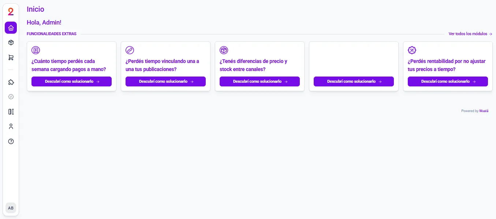

¿Cuánto vendí?
Pedidos, monto total y ticket promedio del período que elijas.
Guía rápida
El Inicio de Grow2on ahora muestra pedidos, facturación y ticket promedio de todos los canales, con un gráfico de la evolución y una página de Reportes para profundizar.
← → pasás de hoja · en el celu, deslizá · I abre el índice · tocá una captura para verla grande
Para qué sirve
Antes el cliente solo veía módulos para contratar. Ahora ve cuánto vendió, por qué canal y qué productos; los módulos siguen debajo.

Pedidos, monto total y ticket promedio del período que elijas.
Cuánto aporta cada canal, en pedidos y en plata, día por día.
El top 10 de productos, en Reportes completos.
Parte 1 · Cómo se usa
Parte 1 · Cómo se usa
La fecha siempre es un rango: de al menos dos días y hasta hoy. Los atajos marcan cuál está elegido.
Sincronizado es un pedido que ya pasó al ERP. «No sincronizados» muestra los que todavía no.
Los filtros viajan en el link: Inicio y Reportes muestran lo mismo, y se puede compartir lo que estás viendo.
Parte 1 · Cómo se usa
En cantidad o en monto. Sobre cada barra: cada canal, su % y el total.
Parte 1 · Cómo se usa
El botón al lado de Cantidad y Monto. Lo elegido queda guardado en las preferencias del usuario: lo encuentra igual en cualquier computadora o en el celu.
El objetivo se guarda aparte para cada vista y para cantidad o monto: una meta diaria no es una mensual. En «Por período», el sombreado marca el período en curso.
Parte 1 · Cómo se usa
El Inicio resume; acá se compara canal por canal y producto por producto.
Parte 2 · Los números
Qué dice la app, qué significa y qué hacer.
Parte 3 · Probalo
En el entorno de prueba (integrador.dev.grow2on.com), con datos de prueba: no se toca ninguna cuenta real.
Los números de la demo son inventados y cambian con el rango de fechas, pero las pantallas son las mismas que va a ver el cliente.